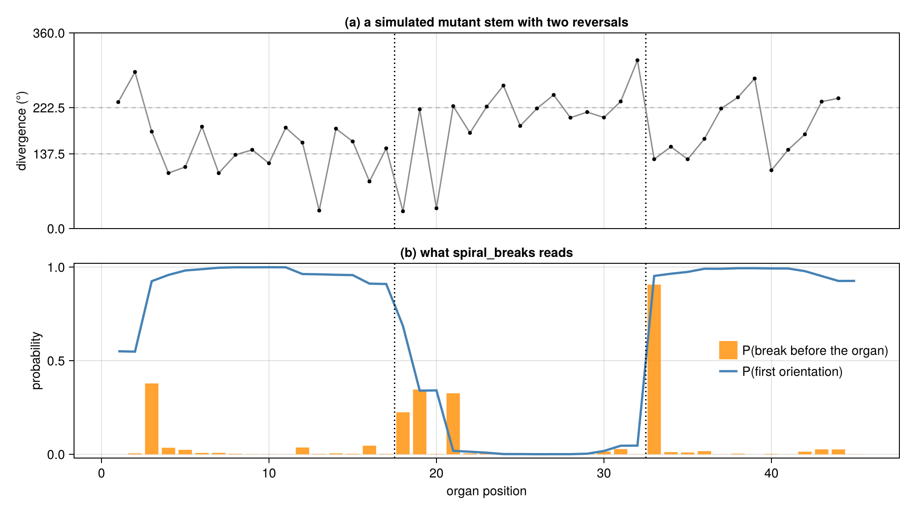
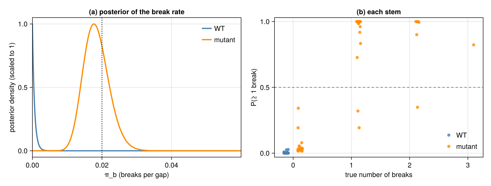

Breaks of the spiral
The angle model gives each stem one spiral, from its base to its top (§2). Some stems break it: the spiral reverses its orientation (such inversions are described in published data), switches to another canonical angle, or is measured with a precision that changes. A fit that ignores a break reads the angles after it as permutations.
spiral_breaks(fit) asks, for each stem, whether its spiral breaks, how many times and where. It is a check after the fit: nothing is refitted.
The model of a break
A break splits a stem into parts.
assumption — the order law restarts at each break: no permutation crosses it. Each part is a stem of its own, with the population parameters of the fit. The parts share the stem's twist rate, integrated over the fit's nodes (§2.6). Each part has its own phase, uniform on the circle like the offset of a stem. In addition, what breaks (kind) changes at each break:
:orientation(the default): the spiral turns the other way;:angle: the canonical angle switches to another one of the prior's list (Canonical angles);:precision: the angles have a new precision, drawn from the fitted law of κ;:phase: nothing else, the pattern only jumps (see Missed organs);- a tuple of these, which change together.
Why a new phase? A perturbation strong enough to change the spiral also displaces it. And a reversed spiral cannot simply continue from the last site: a spiral that reverses after site $\tau - 1$ would put site $\tau$ on site $\tau - 2$, site $\tau + 1$ on site $\tau - 3$, and so on, retracing the old sites. A uniform phase also keeps the parts independent, which makes the computation exact.
The prior on breaks
assumption — each gap between two organs is a break with probability $\pi_b$, independently. A stem of $n$ organs has Binomial($n - 1$, $\pi_b$) breaks, at uniform places.
The odds of $j + 1$ breaks against $j$ are
\[\mathrm{BF} \times \frac{n - 1 - j}{j + 1} \times \frac{\pi_b}{1 - \pi_b} ,\]
with BF the Bayes factor of the angles. With $\pi_b = 0.01$ and 45 organs, the prior expects 0.44 breaks per stem, and a first break wins once the angles favour it by a factor of about 2.3. Longer stems have more chances to break.
The rate is shared by the stems. By default $\pi_b \sim \mathrm{Beta}(1, 99)$ (mean 1 %), one rate for all the stems of the fit, integrated out: each stem's results average over its posterior. This posterior is a result in itself, the propensity of a genotype to break its spiral. A fixed rate can be given instead (break_rate = 0.01).
Why the computation is exact, and what it costs
Given its nuisances, a part $[a, b]$ has a banded permanent as likelihood, like a whole stem (§3). One forward pass from organ $a$ gives all the parts $[a, b]$ at once: after organ $b$, the state in which no site beyond $b$ is used yet is exactly the part ending at $b$. A part's phase uses the stem's offset grid, shifted. The sum over all segmentations, with their values and the binomial prior, is then an exact change-point recursion. A stem of $n$ organs costs about $n/2$ stem likelihoods per kind. On a short stem, spiral_breaks matches a brute-force sum over every segmentation to $10^{-13}$.
Reading the result
For each stem:
| field | what it is |
|---|---|
p_breaks | the posterior probability of 0, 1, 2, … breaks |
logBF | the log Bayes factor of at least one break against none |
p_cut | the posterior probability of a break just before each organ |
p_part | for each organ, the posterior probability of each value of its part (orientation or angle) |
logZ | the log-likelihood summed over every placement of $j$ breaks, for each $j$ |
The result also holds the posterior of the break rate, one rate for all the stems (break_rate: its mean, median and 95 % interval).
With kind = :each, spiral_breaks runs each kind of break in turn and returns one result per kind. Comparing their log Bayes factors tells which kind of break the angles support best.
Missed organs
An organ missed in the measurements shifts the sites of all the organs above it by one divergence ψ. The spiral is unchanged, only displaced: this is a :phase break at the missing organ. spiral_breaks(fit; kind = :phase) therefore flags the stems and the places where an organ may be missing. Other displacements of the pattern look the same, so a flagged stem is worth checking.
Example: a mutant whose spiral reverses
Simulation. Two groups of 40 stems of 45 organs, like those of §6.1. In the wild type, each stem keeps one spiral. In the mutant, each gap is a reversal with probability 2 % (about 0.9 per stem), and each new part has its own phase. The orders are drawn along the whole stem, so some permutations cross a reversal: the simulation also tests the restart of the order law. Each group is fitted as usual, then scanned:
using PhyllotaxisFold
r_wt = fit_map(PhyllotaxisModelAD(angles_wt; torsion = TorsionPrior(), torsion_x = x_wt))
r_mutant = fit_map(PhyllotaxisModelAD(angles_mutant; torsion = TorsionPrior(), torsion_x = x_mutant))
b_wt = spiral_breaks(r_wt) # the defaults: orientation breaks, a Beta prior (1, 99) on the rate
b_mutant = spiral_breaks(r_mutant)
b_mutant.break_rate # posterior of the rate: mean, median, 95 % interval
p_any = [1 - s.p_breaks[1] for s in b_mutant.stems] # the probability of at least one break of each stem
Figure 1. A simulated mutant stem with two reversals (dotted lines). (a) Its divergences, in the orientation of its first part: about 137.5°, then about 222.5° (−137.5°) between the reversals. (b) The posterior probability of a break before each organ (bars), and the posterior probability that each organ lies in a part with the stem's first orientation (line: near 1 before the first reversal and after the second, near 0 between them).

Figure 2. (a) The posterior of the break rate of each group, scaled to its maximum (dotted line: the mutant's true rate, 2 %). (b) Each stem's posterior probability of at least one break, against its true number of breaks.
result — the rate is recovered, and the wild type is clean:
| wild type | mutant | |
|---|---|---|
| true reversals (stems with one or more) | 0 | 33 (25 stems) |
| stems with P(≥ 1 break) > 0.5 | 0 of 40 | 22 of the 25, none of the other 15 |
| reversals placed within one organ | 22 of 33 | |
| break rate: posterior mean (95 % interval) | 0.06 % (0–0.23 %) | 1.84 % (1.19–2.61 %); true 2 % |
Of the 11 reversals not placed, 8 lie within 8 organs of an end of the stem or within 2 organs of another reversal, where a part has few organs.
result — ignoring, the reversals bias the usual fit of the mutant gives:
| wild type | mutant | |
|---|---|---|
| organs decoded as displaced (true) | 21.8 % (21.5 %) | 28.2 % (21.7 %) |
| fitted κ (true about 6.4) | 6.7 | 5.2 |
The angles after a reversal are read as extra permutations and noisier measurements: a mutant that reverses its spiral looks like one that permutes its organs more. The break rates tell the two apart.
Limits
- Slow changes are not breaks. A slowly drifting divergence is absorbed by the twist (§2.3). Breaks are jumps.
- Short parts carry little. Breaks near either end of a stem, or a few organs apart, are hard to place.
- The order restarts at each break. The permutations across a break are lost, which makes the test slightly conservative.
- The fit is not redone. The population parameters come from a fit that ignored the breaks. When many stems break, refit their parts as separate stems.
- A twist that changes along the stem is not a kind of break.